Focus group
Who
Frequent and occasional gamers, age 13–26
Why they play
A fun, easy game to kill boredom in downtime

LokyGames
Contains ads · In-app purchases
An indie mobile game built & published on Google Play (1k+ downloads, 4.9★ rating), demonstrating end-to-end Visual design, Gamification, and UX in game mechanics. Individually designed & developed under LokyGames.
Game Engine to create game
For Scripting functionalities
For creating 2d assets and UI elements
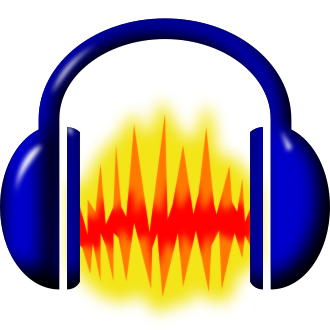
for Sound editing
How I derived this User interface using extensive user feedback and improvising in each iteration
Ideating and wire-framing each screens
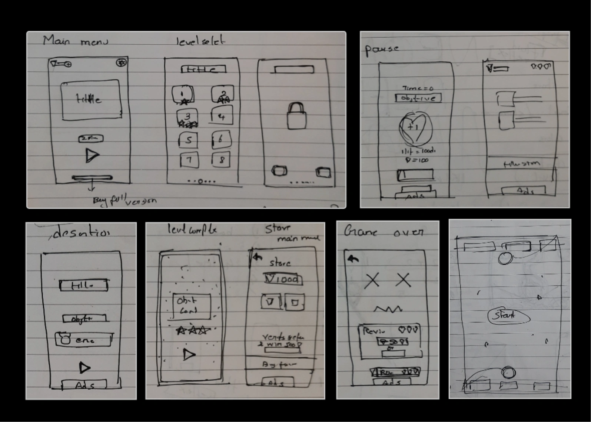
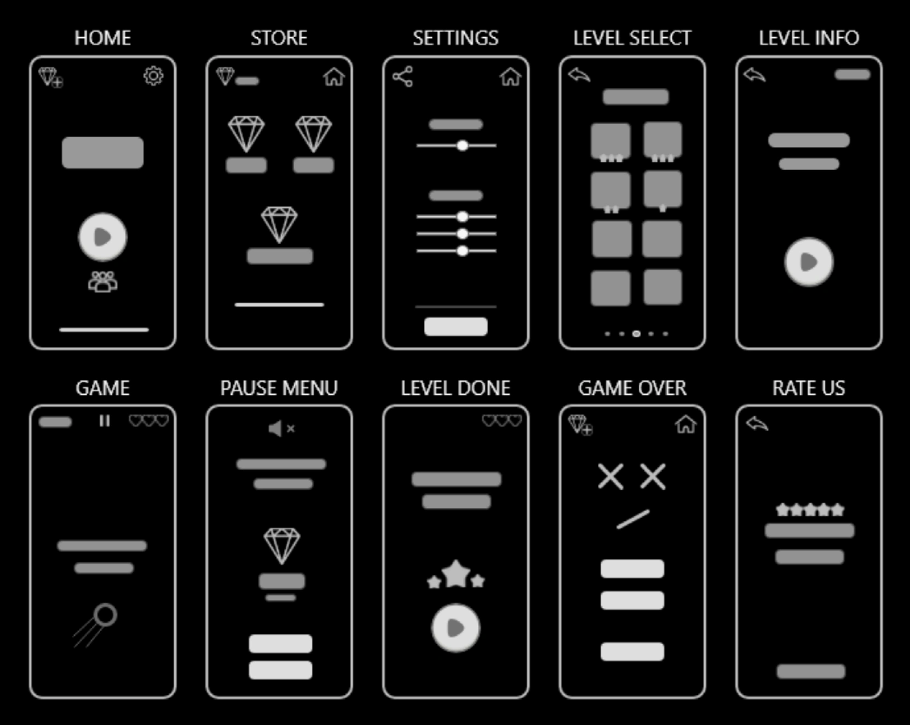
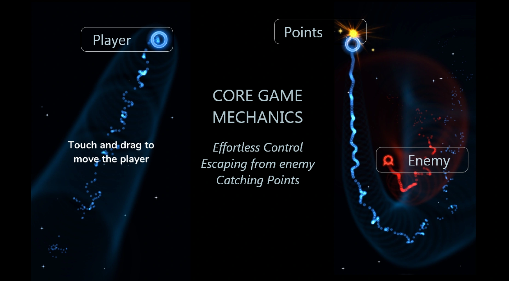
The core game loop is all about surviving the enemy in each round, It was hard to create entertaining levels with such a small game concept, I had to do lot of brain storming to create various levels for this games.
Made up to 80 levels, grouped them in pairs of 8 which deserves specific game play style.
Legend: S = speed (speed1, speed2, speed3, varying speed) · P = points type · F = frequency (1=normal, 2=switch, 3=move, 4=push to score) · T = trigger Range (dist1, dist2, dist3)
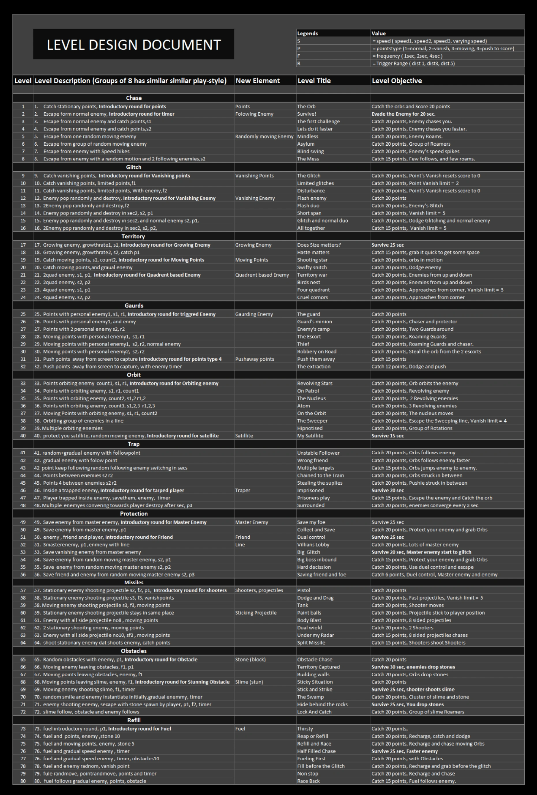
After several play-testing session, I adjusted the difficulty of the level according to the given graph below. by following Csikzentmihalyi's flow state principle.
When person's ability to execute a task balances the difficulty of the task, they enter into the flow state, where people enjoy the game.
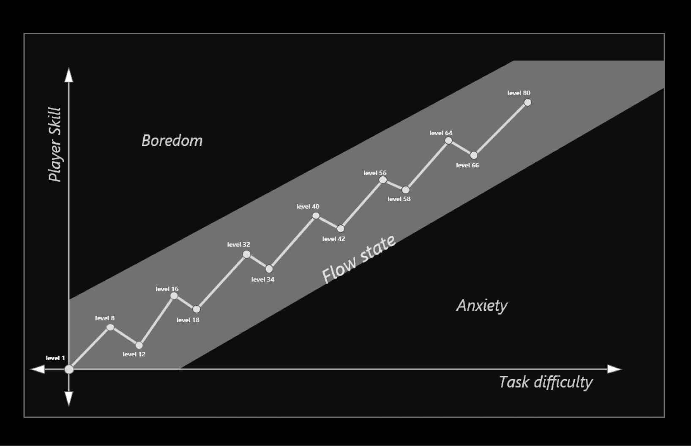
Took several game play test to find out the optimum speed and behaviours of the enemies to keep the flow state intact. Few screenshot of diffent levels are shows below
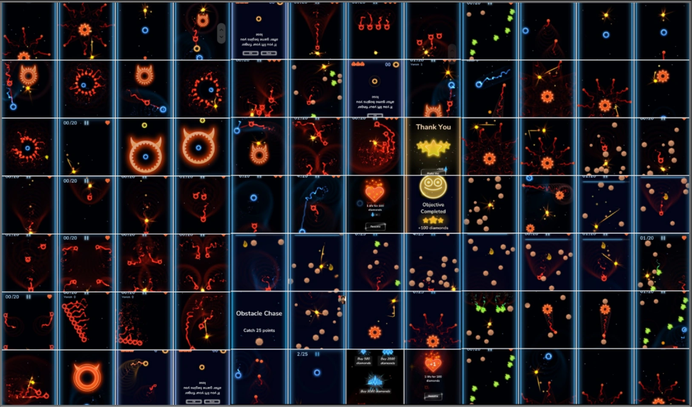
List of levels and elements in the level selector screen
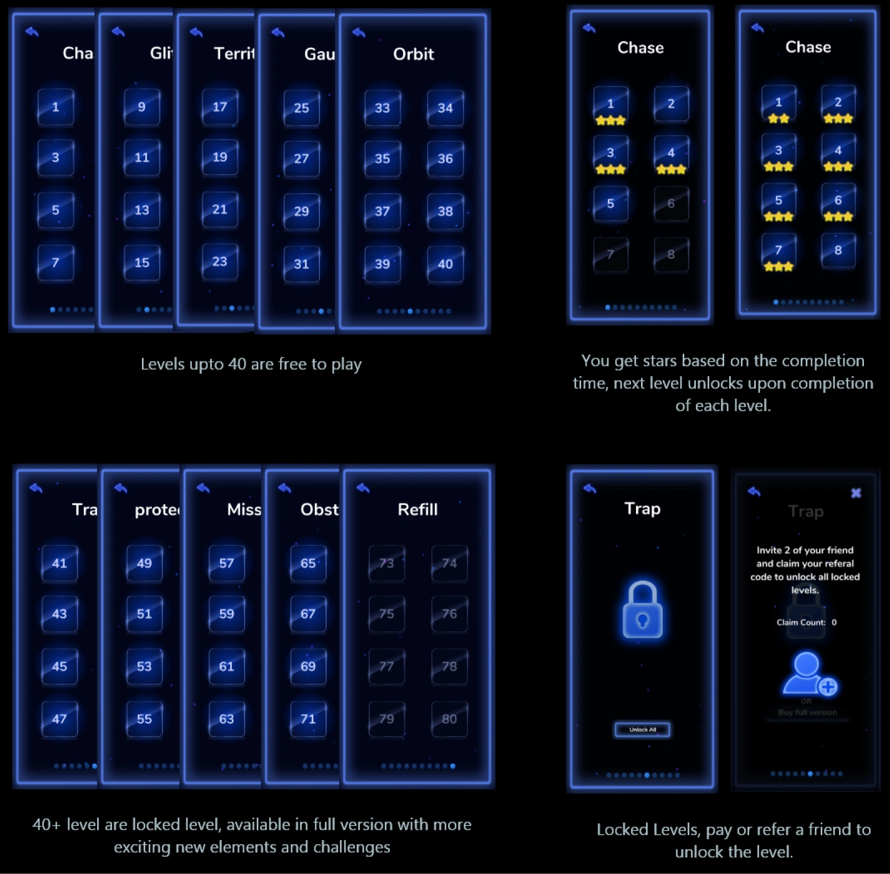
After play test of each level, I grouped levels based on the game-play speed to assign background music according to the tempo of the level
| Music Tempo | Levels | Game-play |
|---|---|---|
| Fast beats | 4, 7, 10, 14, 18, 20, 24, 32, 42, 58, 64, 69, 70, 74, 75, 76, 77, 78, 79, 80 | Fast |
| Medium beats | 1, 3, 5, 8, 9, 11, 12, 15, 16, 19, 21, 23, 29, 34, 35, 38, 43, 50, 51, 60, 61, 62, 63, 67, 71, 72 | Medium |
| Slow beats | 15, 17, 22, 25, 26, 27, 28, 30, 31, 33, 36, 37, 39, 40, 41, 44, 45, 48, 57, 73 | Slow |
| Calm Melodies | 2, 6, 31, 46, 47, 49, 52, 54, 55, 56, 65 | Very Slow |
Initially I used bubble and gradient style of interface, since I was planning to invoke feelings of water and fluidness in the gameplay, I also added a lot of ripple effects.
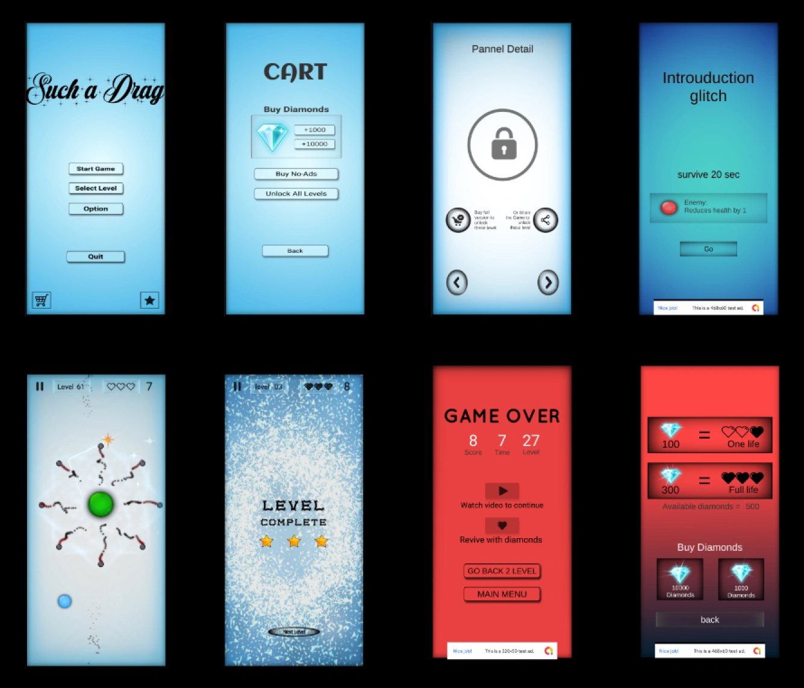
Different age group, around 20 users were selected
Required complete re-write of UI, gather attractive sounds.
From the learning of previous iteration, I decided to change the Complete UI, I made a quick prototype which invokes feeling of space and fluidness, giving it a neon touch to make it interesting.
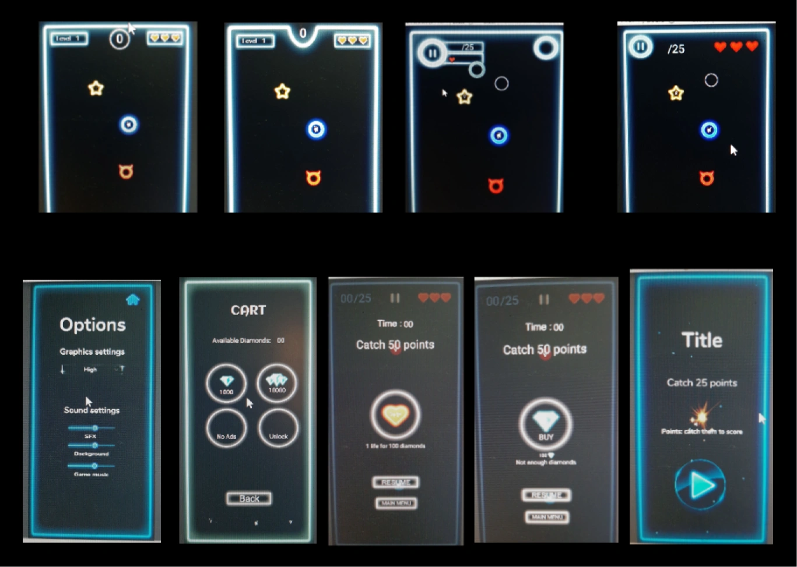
people liked the new interface, so upgrade the same UI style and add interactive musics to create engagement
Redefining the whole Neon UI. Created icons and character from scratch in adobe illustrator, gathered free sounds from various source. Analyzed each level and categorized into the game play speed: slow, medium, and fast. to play music with respective tempo.
Drew all neon icons, blue to indicate neutral sceens, red for game over
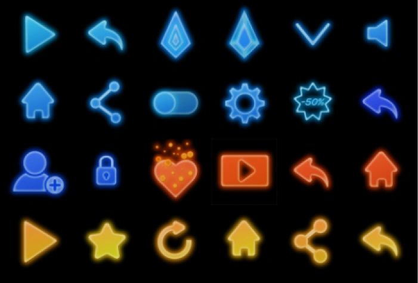
Used simple circle for base. Horns and shapes to show variation in characters.
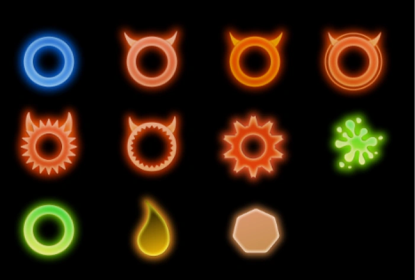
Cool colors indicaiting the player and used in Neutral UI screen. like
Bright warm colors indicaiting the enemies and also used in Game
Bright yellow is used in the rewarding screens
Warm green is used to indicate game obstacles
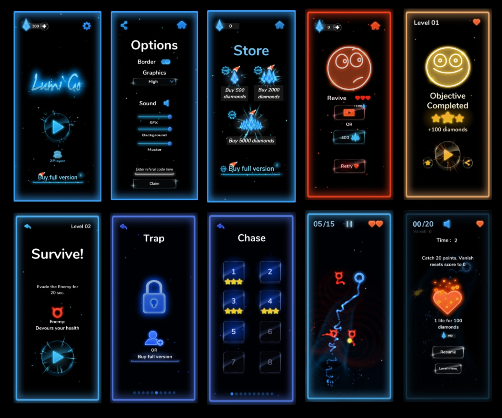
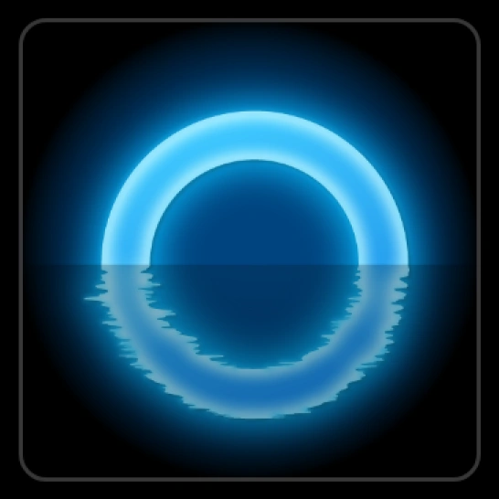
Logo which got most of the votes 42 out of 50, based on the survey.
Glowing blue indicates the flow of enegy in the game and neon style. Reflection in the water explains the smoothness of the game.
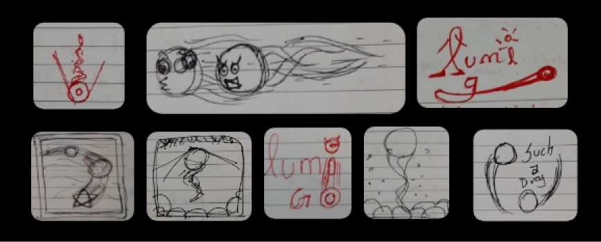
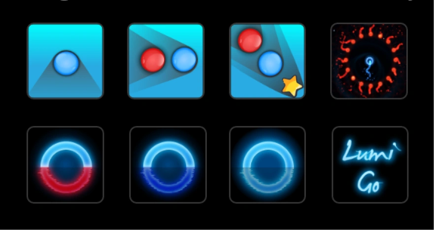
Names are taken according to the mostly used key words, and conducted a survey with 50 friends to find out the apt name.
| Liquescape | 32 votes |
| Fluidscape | 29 votes |
| Lumi Rush | 44 votes |
| Lumi Go | 47 votes |
| Fast Dodge | 20 votes |
| Red bouncers | 33 votes |
| Dodge my trail | 30 votes |
| Reflescape | 39 votes |
| Angry balls | 42 votes |
| Flee and Flow | 29 votes |
| lique dash | 38 votes |
| Neon Rush | 44 votes |
| Ilumos | 31 votes |
| Devil's Tag | 24 votes |
Various strategies to provide immersive and engaging interface and also to boost monitization
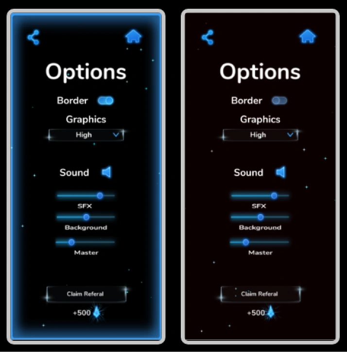
50% of users in the testing seems to like the game with neon border, and other 50% seems to like the game without it.
Solution: provided a customization to toggle on
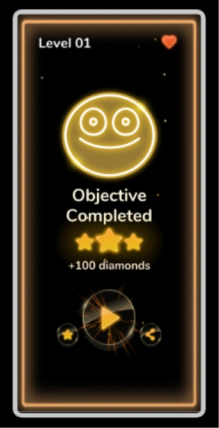
golden yellow color and a smile forces you to think you are rewarded, back button is not provided so you are forced to the next level.
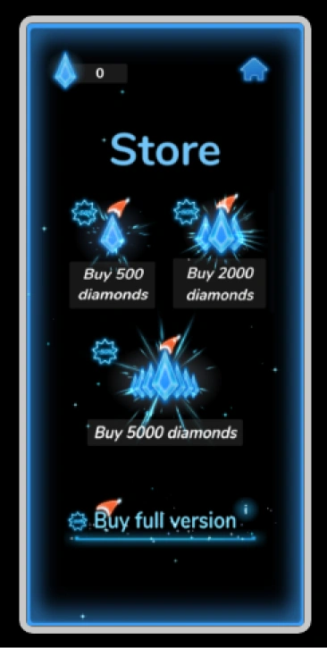
50% off tag to encourage players to buy diamonds
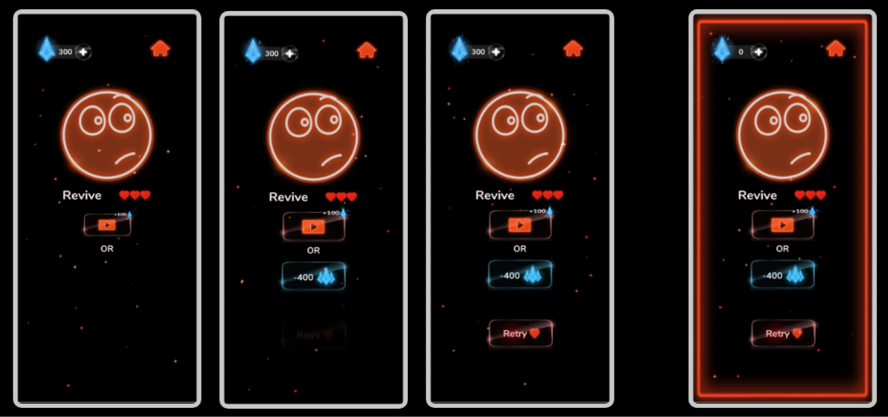
Revive option is shown first as the player enters game over screen, each button zoom-in in the sequence seamlessly, such that Retry button takes time to popup, mean while user are encouraged to use revive to spend diamonds or to watch video. Home button is in red color so that player doesn't notice it much, and store is in blue so that he notice it often.
Red color and a sad smile emphasize your defeat, Store is provided in this screen to encourage micro transaction.
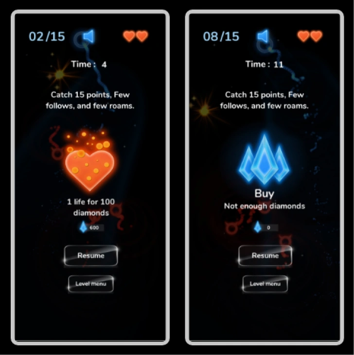
bright heart shaped button to triggers player to refill life at the cost of diamond.
In game, buy button is provided in case if you wish to purchase diamonds and upgrade your health.
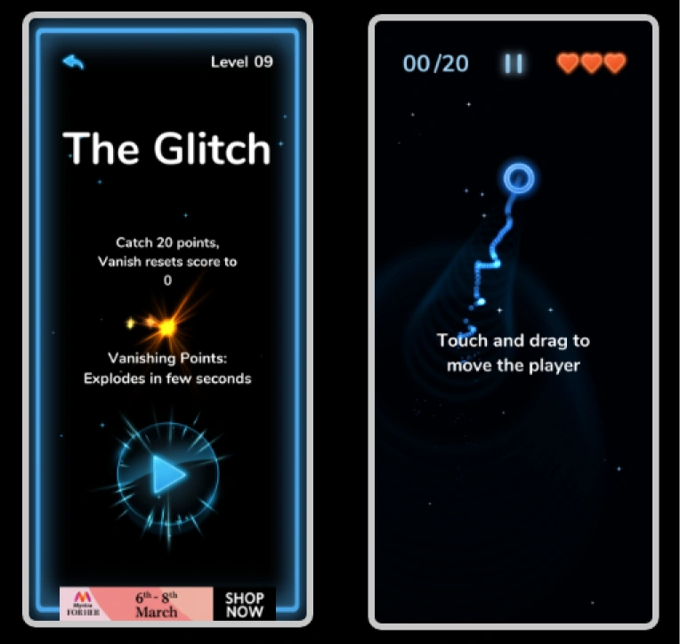
Level description screen states objective and also introduction of new elements.
In game tutorial is shown, whenever new game element is introduced.
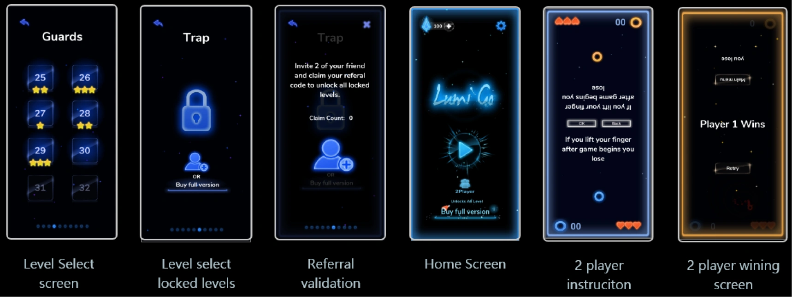
Usability evaluation of
Primary elements (avatar, enemy, points) and secondary ones (lives, volume, bonus points) all carry weight in the experience.
The game feels smooth — but early discovery surfaced disconnects. Time to test if it actually plays as intended.
Do users intuitively grasp the usage and control of every primary and secondary game element?
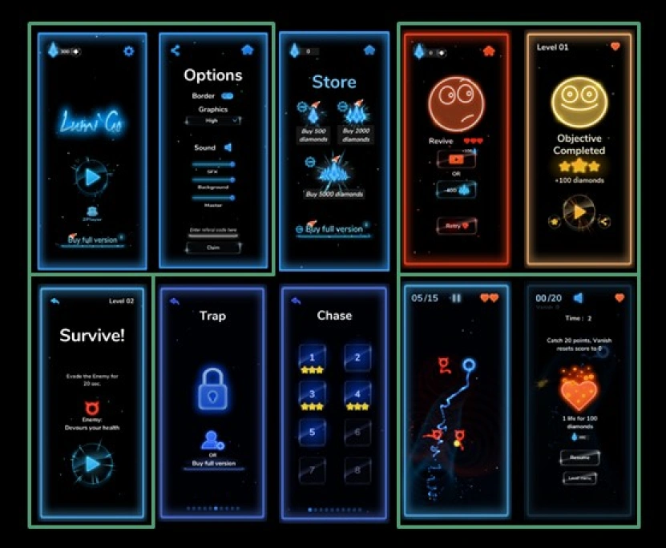
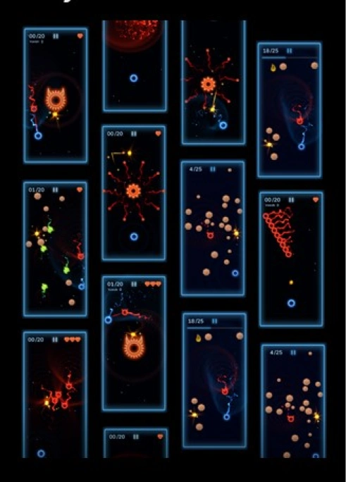
Frequent and occasional gamers, age 13–26
A fun, easy game to kill boredom in downtime
Can users understand the game elements and build a working mental model of how it all fits together?
What was the overall play experience, reflected back after completing set tasks?
Objective: Smooth onboarding — can users find and navigate the game's elements?
Goals given to each user
Objective: Do players intuitively read the game's elements, and how does the play experience feel overall?
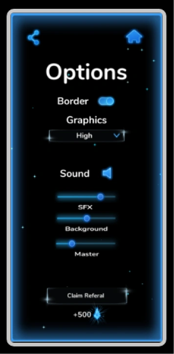
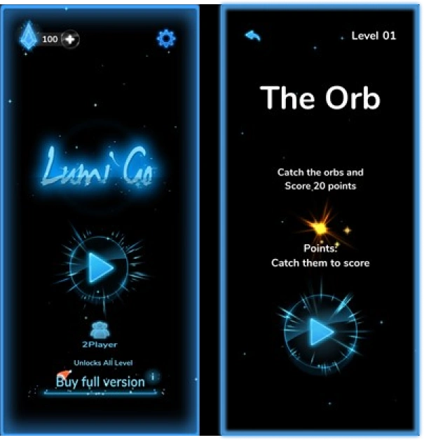
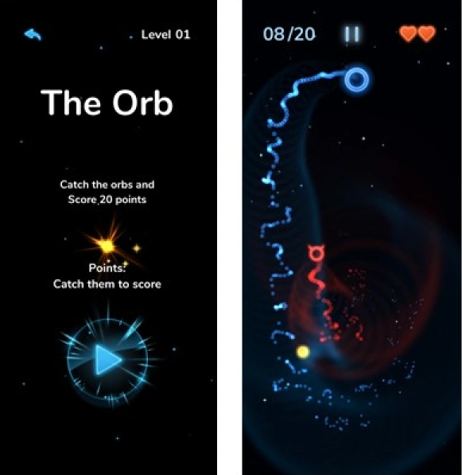
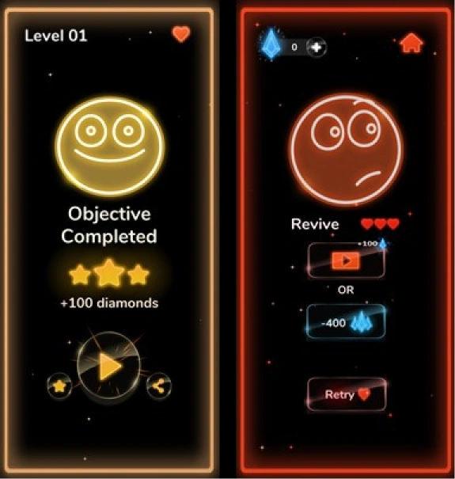
"The instructions were short and crisp." / "Can't wait to click play."
"It takes just 5 sec to understand the enemy's behaviour, even if I miss the description."
"Especially in Level 4 — the enemy got faster and started moving randomly instead of chasing me!"
Should've asked for reactions after the fact, not mid-play — first instinct beats an interrupted one.
Players acted naturally until asked to explain themselves — then hesitated putting it into words.
Some buttons didn't read intuitively — but players adapted fast after one encounter.
Several elements only registered once we probed for them directly.
Level Select ↔ Home navigation was the single most reported friction point.
Metaphors (heart, diamonds, stars) were recognized — their function wasn't.
Functional gaps and all, players still enjoyed the game — that came first for them.